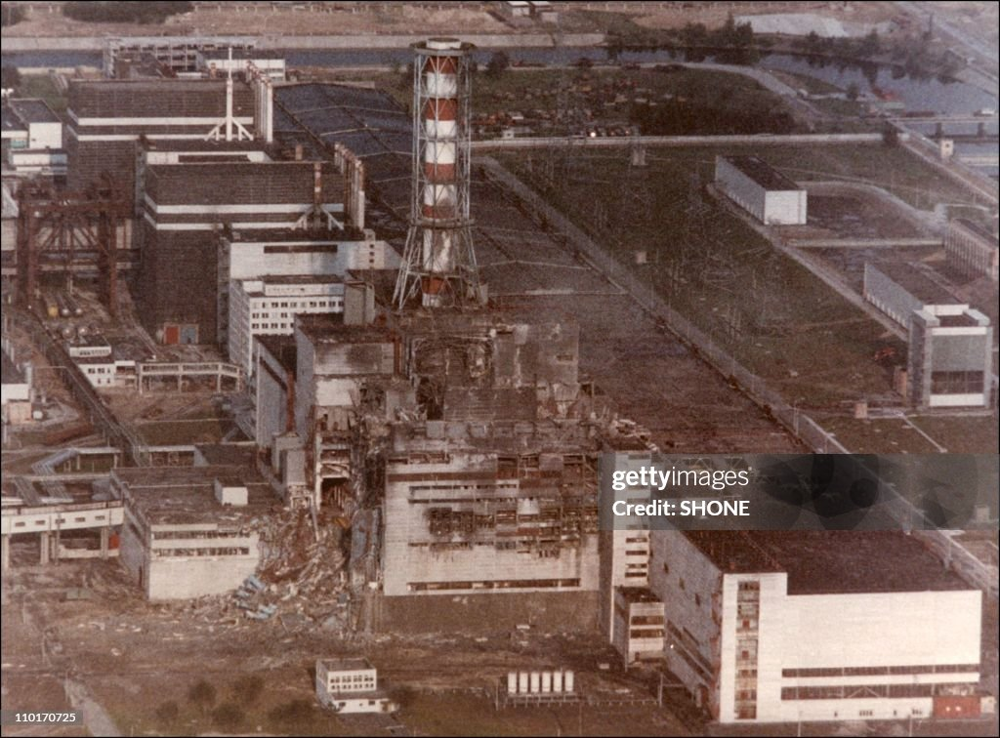
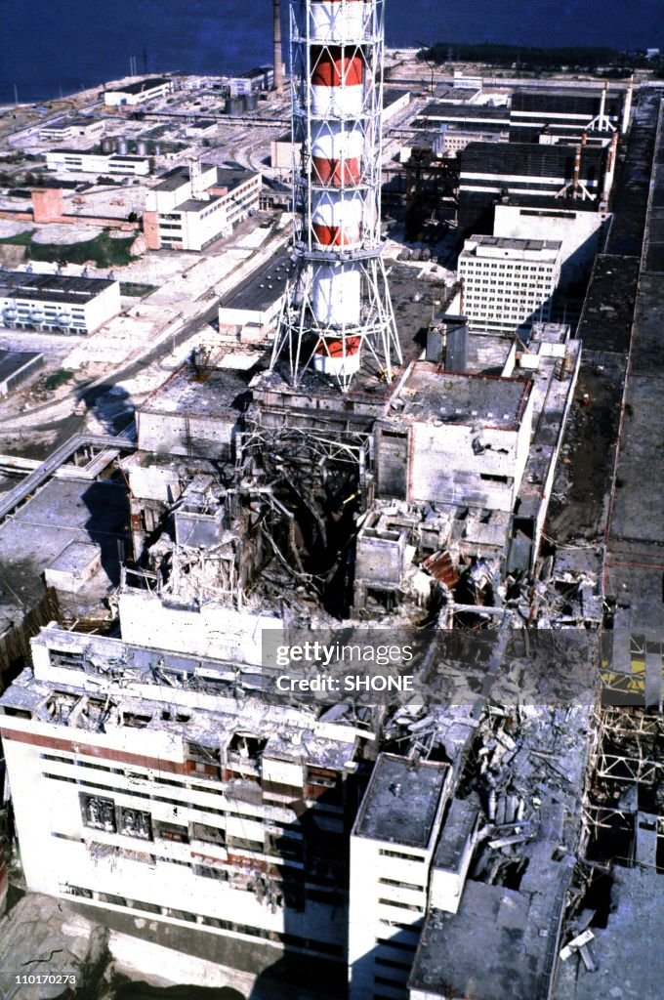

On the 26th of April 1986, located near Pripyat in the
Ukraine SSR exploded.
The accident resulted in dozens of direct deaths and a major release
of radioactive material into the environment, causing even more
casualties, major health effects, and causing the creation of the
Chernobyl Exclusion Zone. It would later be called the most serious
accident that has ever occurred in the field of nuclear energy.
Explanation of the test
The accident happened while conducting an experiment to simulate the cooling of the reactor during a serious accident in blackout conditions. Though, more specifically, they wanted to see if the kinetic energy of a slowing turbine generator could produce enough electricity to run the reactor’s main water-cooling pumps during the first (very crucial) 30 – 60 seconds after an external power loss, which is the exact time needed for the backup diesel generators to start up and take over. Successfully proving that this worked would provide a reliable emergency power source.
Complications before the test
Due to a series of operational mistakes and delays, the reactor’s thermal accidentally dropped to a dangerously low level of 30 – 100 megawatts instead of the planned 700 – 1,000 megawatts, because of a neutron absorbing gas called xenon gas. Because the iodin-135 continued to decay into the xenon-135, the xenon gas built up and caused the reactor's power to plunge drastically. Operators tried to force the power back up by removing almost all the control rods, far below the safe minimum level, to compensate for the xenon gas. The reactor eventually stabilized at 200 megawatts, much lower than originally planned and leaving the core operating at a hyper-sensitive and unstable condition.
The test and explosion
At 1:23:04 AM, the test finally began.
Turning off steam to the turbine-generator caused the water pumps to
slow down, reducing the flow of cooling water through the reactor core
and causing it to boil. Because of the RBMK’s positive void
coefficient, meaning that steam increases the reaction instead of
stopping it, the steam from the boiling water caused power and
temperature to sharply rise.
At 1:23:30 AM, the shift supervisor, Aleksandr Akimov, ordered another
operator to press the AZ-5 button, which would instantly insert all
211 control rods and cause an emergency reactor shutdown.
At 1:23:40 AM, the button was pressed.
At 1:23:43 AM, the power excursion rate emergency protection system
signals came on as power exceeded 530 megawatts and continued to
rapidly rise. Fuel elements ruptured which led to increased steam
generation, which further increased the reactor’s power due to the
positive void coefficient. Damage to even three or four fuel
assemblies would have easily led to the destruction of the reactor.
The rupture of the fuel assemblies led to a rapid increase in pressure
that even the 1,000 ton reactor support plate became detached,
consequently jamming the control rods which were only halfway down by
that time. As the channel pipes began to rupture, mass steam
generation occurred as a result of the depressurization of the reactor
cooling circuit.

Two explosions were recorded, one being the first steam explosion with a second one following two or three seconds later. Fuel, moderator, and structural materials were all ejected, causing numerous fires and the ruined core to be exposed to the atmosphere. One worker, whose body was never discovered, was killed in the explosion and another succumbed to their injuries in the hospital a few hours later.

Back To Top ↑